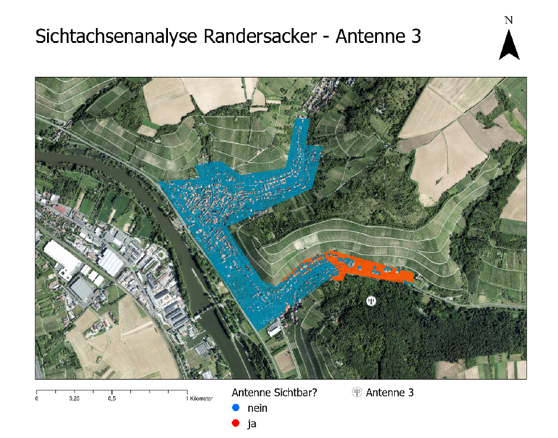
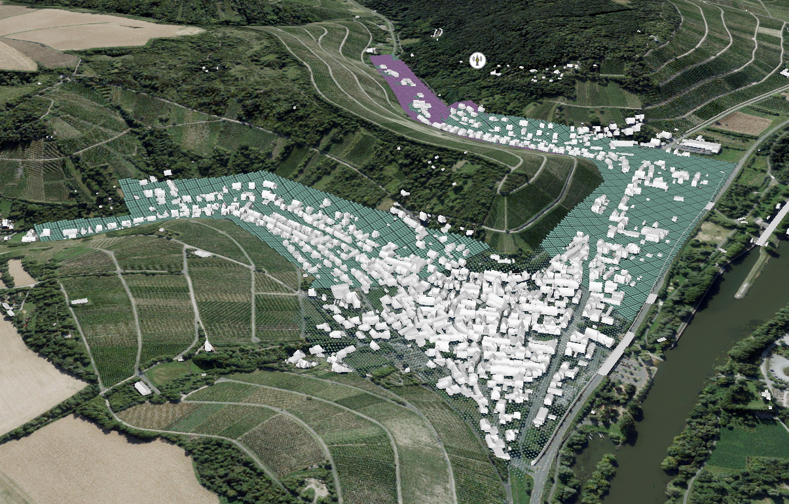
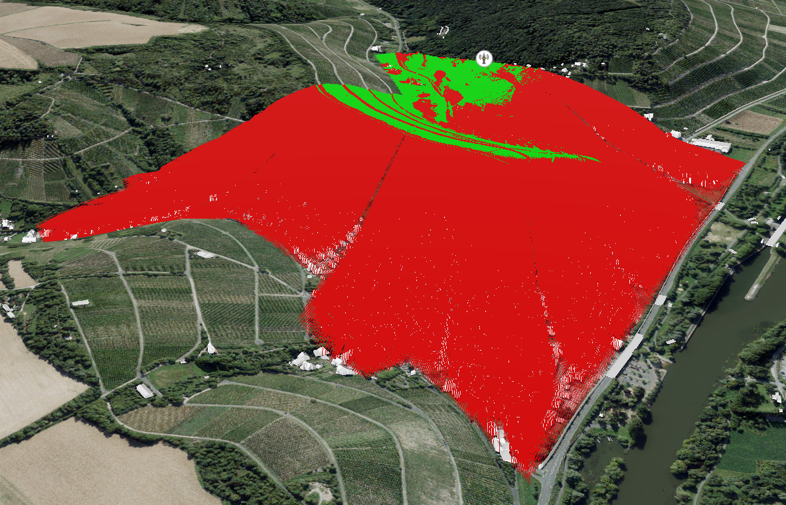
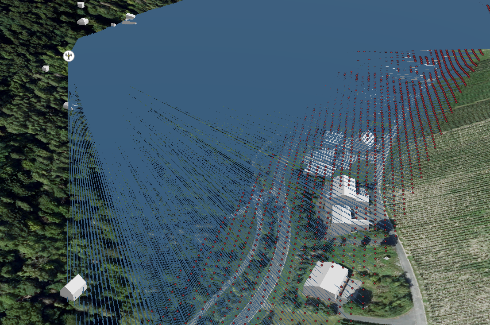

Lade 3D-Geländerelief & Geodaten...
3D-GIS Untersuchung fiktiver Antennenstandorte • Maintal bei Würzburg

Kartografische Auswertung der berechneten Punkte im Tal (Grün = Sichtbar, Rot = Blockiert)

Räumlicher Strahlenfächer von Antenne 3 auf das 1,5m-Beobachtungsgitter

Detailanalyse der Sichtunterbrechungen an Talrändern und Firstkanten

Verschattungseffekte durch eng stehende historische Baukörper
Verantwortlicher Betreiber dieser Website:
Ralf Oppel
Studiengang Geodatenmanagement / Vermessung
Hochschule für angewandte Wissenschaften Würzburg-Schweinfurt (THWS)
E-Mail: ralf.oppel@study.thws.de
Hinweis: Bei diesem interaktiven Webportal handelt es sich um ein studentisches Studien- und Forschungsprojekt für das Modul 3D-GIS. Die dargestellten Antennenstandorte sind fiktiv.
Die Geodaten (Digitales Geländemodell DGM1, 3D-Gebäudemodelle LoD2 CityGML, Orthofotos DOP20) wurden bezogen über:
Bayerische Vermessungsverwaltung
Landesamt für Digitalisierung, Breitband und Vermessung Bayern (LDBV)
Webportal: https://geodatenonline.bayern.de/
Nutzungsbedingungen der Geodaten:
Die Geodaten unterliegen der Datenlizenz Deutschland – Namensnennung – Version 2.0 (dl-de/by-2-0).
Quellenvermerk: „Datenquelle: Bayerische Vermessungsverwaltung – www.geodaten.bayern.de“